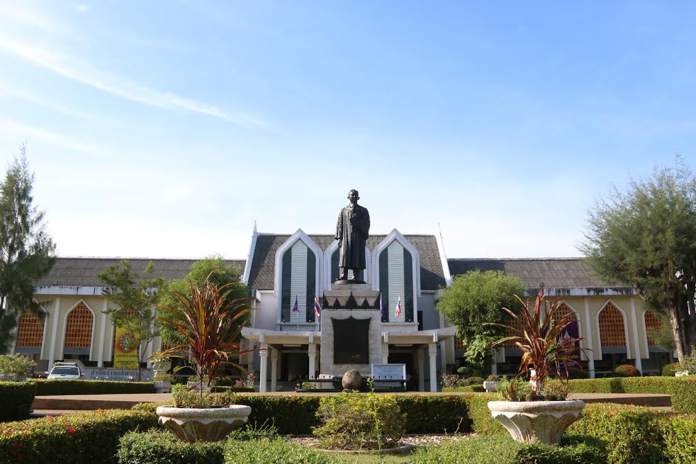

วิทยาเขตปัตตานี
 มหาวิทยาลัยสงขลานครินทร์เป็นมหาวิทยาลัยแห่งแรกในภาคใต้เริ่มก่อตั้งที่ตำบล รูสมิแล อำเภอเมือง จังหวัดปัตตานี เมื่อปีพ.ศ.2509 ในระยะแรกใช้ชื่อว่า "มหาวิทยาลัยภาคใต้" (UNIVERSITY OF SOUTHERN THAILAND) ต่อมาในเดือนกันยายน2510 มหาวิทยาลัยฯได้รับพระราชทานชื่อว่า มหาวิทยาลัย สงขลานครินทร์ (PRINCE OF SONGKLA UNIVERSITY)ตามพระนาม ฐานันดรศักดิ์สมเด็จพระบรมราชชนกเจ้าฟ้ามหิดลอดุลยเดชกรมหลวง สงขลานครินทร์ ในวันที่12 มีนาคม 2511 ได้มีพระบรมราชโองการ ประกาศใช้ พระราชบัญญัติ มหาวิทยาลัยสงขลานครินทร์ มหาวิทยาลัย จึงกำหนดให้วันที่ 13 มีนาคม ซึ่งเป็นวันที่ พระราชบัญญัตินี้มีผลบังคับใช้ เป็นวันสถาปนามหาวิทยาลัย มหาวิทยาลัย สงขลานครินทร์ได้กำหนดเป้าหมาย เพื่อการพัฒนาภาคใต้ ตามแผน พัฒนาการศึกษา อันเป็นพื้นฐานในการพัฒนาเศรษฐกิจและสังคม เพื่อการอยู่ร่วมกัน อย่างสันติสุข และเสมอภาคของประชาชนและเพื่อเป็นแหล่ง บริการ วิชาการชุมชน ทั้งในชนบท และในเมือง โดยที่วิทยาเขตปัตตานี ตั้งอยู่ที่ตำบลรูสะมิแล อำเภอเมือง จังหวัดปัตตานี